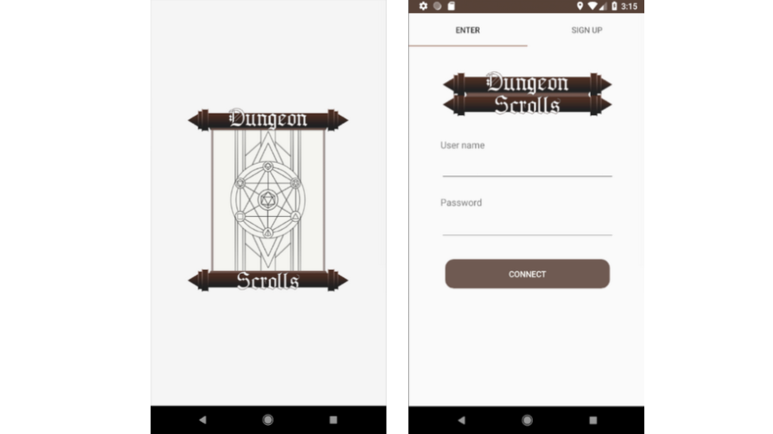
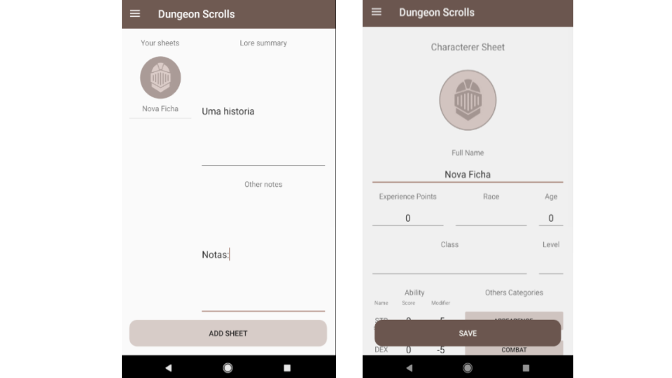
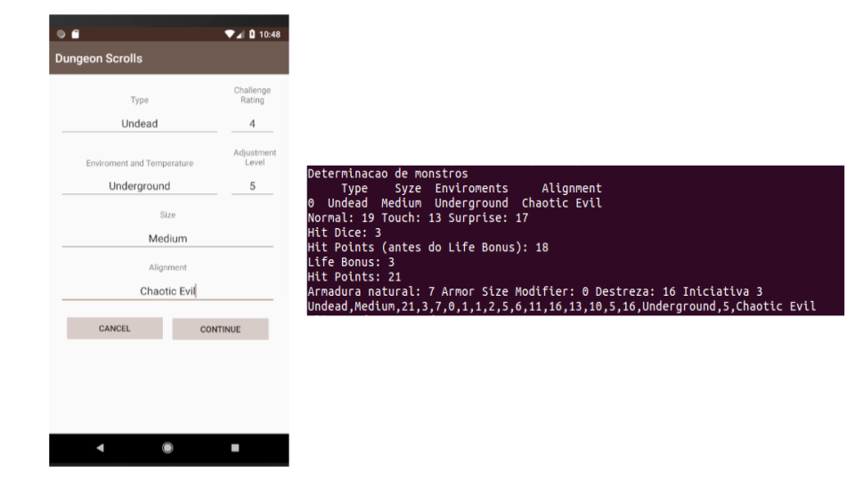

Dungeon Scrolls
Source Code : Public
Project created between me and my colleagues to facilitate the management of our RPG sessions, allowing to control the number of characters and their attributes, number of players, storage of books in use, and other features of a rpg system, but with spotlight the creation of monsters by techniques of Machine Learning.
Contributions
In this project i participate in design implementation of some screens from a prototype,
made in photoshop.
My other contribution came by one of our biggest ambitions that bring us to make this
program, the quick creation of custom monsters.
Android App
The design of screens were made usign markup language XML with the drag and drop of elements
available in Android Studio for creation of layouts. The vast majority of application icons,
images or assets of application was original creation using photoshop.


The logical part of frontend was made with Java, to control process, such as, connect user to
a firebase server, what was choosen to storage all data of application, to know if there was any
change in the data of that session and if so, modify the screen of user to represent that state
and save in a local storage, witch was a SQLite database, serving as cache to application.
Creation of Artificial Monsters
That was the feature of the application that I worked most, this is where I had my
first contact with artificial intelligence because all the algorithms used in
application, and others who don't obtained good results and then was discarded, were studied
during App development such as Knn, Svm, Neural Network, Random Forest, etcetera.
Considering that the best established libraries today are found in python, the
volume and format of dataset, beyond the ease of language in manipulation and visualization
of data, a remote server has been created that the user requests him to create a new
monster, sending parameters as can be seen in the image below, with the corresponding
server response that were normalized by convention in the project::
